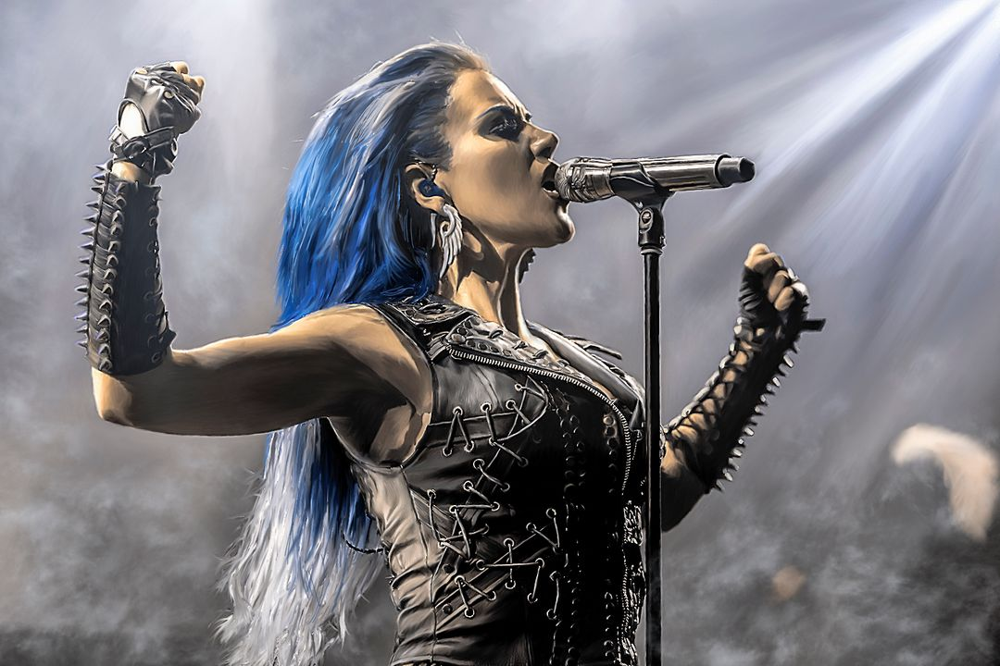
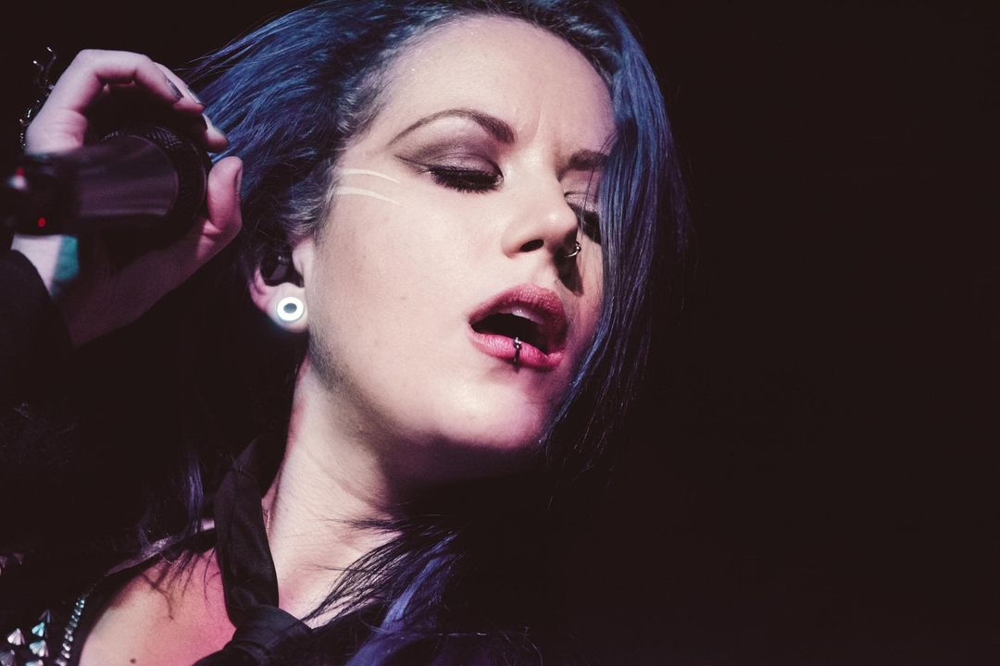

Vocalista da banda Arch Enemy desde 2014.
Ex-vocalista da banda The Agonist, onde iniciou sua carreira.
Conhecida por sua poderosa voz gutural e técnica vocal.
Participou do álbum "War Eternal" do Arch Enemy.
Colaborou com Kamelot na música "Sacrimony (Angel of Afterlife)".
Defensora dos direitos dos animais e vegana.
Participou do álbum "Will to Power" do Arch Enemy.
Fez participação especial com Delain na música "The Tragedy of the Commons".

Recebeu reconhecimento por sua presença de palco intensa.
Gravou o álbum "Eye of Providence" com The Agonist.
Participou da música "Planetary Duality" com After Forever.

Inspirada por bandas como Iron Maiden e Metallica.
Fez turnês mundiais com Arch Enemy em grandes festivais.
Participou da música "Falling Like The Fahrenheit" com Kamelot.
Recebeu prêmios por sua contribuição ao metal melódico.
Gravou o álbum "Lullabies for the Dormant Mind" com The Agonist.
Participou do projeto Metal Allegiance.
Fez participação especial com Tarja Turunen na música "Demons in You".
Reconhecida como uma das melhores vocalistas de metal.
Gravou o álbum "Prisoners" com The Agonist.
Participou da música "Endless Night" com Kamelot.
Defensora ativa de causas sociais e ambientais.
Fez parte do álbum "Deceivers" do Arch Enemy.
Participou do álbum "The Shadow Theory" com Kamelot.
Inspirou fãs com sua autenticidade e paixão pela música.
Gravou o álbum "Once Only Imagined" com The Agonist.
Participou da música "Do or Die" com Tarja Turunen.
Recebeu elogios por sua versatilidade vocal.
Fez turnês com bandas como Nightwish e Epica.
Participou do álbum "The Ninth Hour" com Sonata Arctica.
Reconhecida por sua dedicação ao metal extremo.
Gravou o álbum "A Star-Crossed Wasteland" com The Agonist.
Participou de eventos beneficentes para causas sociais.
Fez participação especial com Amaranthe na música "Do or Die".
Inspirou uma nova geração de vocalistas femininas no metal.
Gravou o álbum "Orphans" com The Agonist.
Participou do álbum "The Human Contradiction" com Delain.
Recebeu prêmios por sua contribuição ao metal melódico.
Fez turnês com bandas como Slayer e Megadeth.
Participou do álbum "Haven" com Kamelot.
Reconhecida como uma das melhores vocalistas de metal.
Gravou o álbum "The Great Mass" com Septicflesh.
Participou de festivais como Wacken Open Air e Hellfest.
Fez participação especial com Soilwork na música "Stålfågel".
Inspirou fãs com sua autenticidade e paixão pela música.
Gravou o álbum "Deceivers" com Arch Enemy.
Participou do álbum "The Shadow Theory" com Kamelot.
Recebeu elogios por sua versatilidade vocal.
Fez turnês com bandas como Nightwish e Epica.
Reconhecida por sua dedicação ao metal extremo.